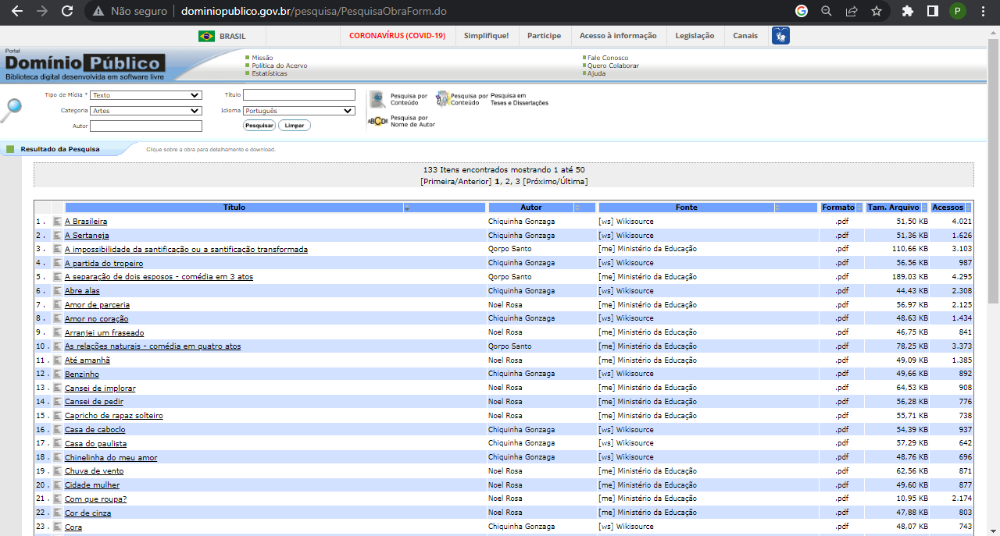

Java Script e suas funções
Onde usar?
Um dos focos do Java Script é fazer interações entre o desenvolvimento front-end e back-end, com foco na usabilidade final pelo usuário. Mais utilizado em motores de busca e em páginas que necessitam repassar uma informação através de uma busca feita em um determinado banco de dados.
Na imagem abaixo pode-se observar o print de um site html, onde seu foco é o armazenamento de bibliotecas de domínio público.

Funcionamento
Na imagem abaixo, é demonstrado o funcionamento do java script. Através de diversos filtros implementados na ferramenta, pode-se buscar por livros fazendo uso de filtragem por tipo de arquivo, categoria, autor, título e idioma. Provavelmente o banco de dados usado tem muitos arquivos e esse motor de busca fornece agilidade e rapidez na realização de buscas.

Resultado da busca
Na imagem abaixo o buscador retornou os seguiuntes arquivos para download, quando os filtros escolhidos foram, TEXTO, ARTES e PORTUGUÊS.
Conclusão
O motor de busca implementado com o uso de java script é muito útil por fornecer meios de interação entre quem acessa o site e o servidor onde os arquivos estão hospedados, sem essa essa ferramenta de filtragem, certamente a pesquisa por arquivos seria mais díficil e levaria muito mais tempo, pelo fato de ser necessário acessar item por item até chegar ao arquivo correto.